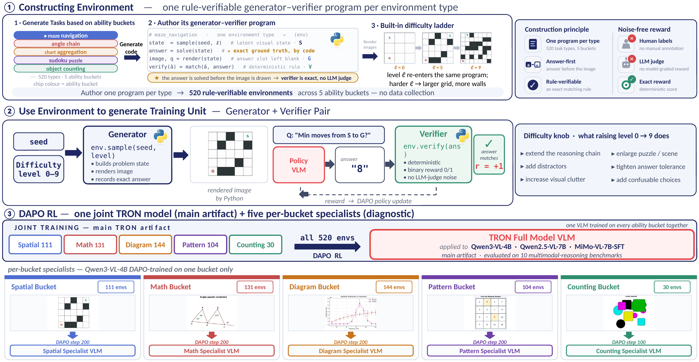

A substrate for visual-reasoning RL where every training rollout is generated on demand by a controllable generator–verifier program — fresh, difficulty-controlled, and exactly graded.
Existing visual-RL post-training trains on static, curated datasets bounded by their collection budget. TRON replaces that with an online substrate.
Reinforcement learning for visual reasoning needs scalable, verifiable, and controllable training signals. Existing visual RL post-training trains on static curated datasets, with fixed image–question–answer samples bounded by their collection budget. We introduce TRON (Targeted, Rule-verifiable Online eNvironments), an online environment substrate: a training rollout is generated on demand by a controllable generator–verifier program that samples a fresh latent visual state, renders an image, asks a question, and exactly verifies the answer.
A single run can therefore draw an unbounded stream of fresh instances at the difficulty level required by the current curriculum. The current TRON suite contains 520 environments organized into five ability buckets (spatial, mathematical, diagram, pattern/logic, and counting); the same substrate supports both a single full model trained on all buckets and per-bucket ability-specialist models, with no additional data collection. We also introduce a substrate analysis covering generation reliability, instance and level diversity, cross-environment near-duplicates, and base-model pass rate by difficulty level. RL post-training with TRON-DAPO consistently improves performance on ten external multimodal reasoning benchmarks across Qwen3-VL-4B, Qwen2.5-VL-7B, and MiMo-VL-7B.
520 generator–verifier programs that produce fresh image–question rollouts at training time, with no cap on instances per run.
Five ability buckets train a single full model and per-bucket specialists from one substrate — no extra data — revealing new insights on ability transfer.
We evaluate generation quality, diversity, and difficulty calibration, with consistent gains across three open VLM families on ten benchmarks.
Each environment owns both a generator and a verifier. Because the answer is fixed before the image is drawn, the reward is exact — no LLM judge, no parsing.
One Python program per task type targets a single reasoning mechanism, with a built-in difficulty ladder (levels 0–9).
A fresh seed samples a latent state, renders the image with the answer slot left blank, and asks a question. No two steps see the same instance.
The deterministic verifier scores the policy's answer with a binary reward, feeding a DAPO policy update and an advancing curriculum.

TRON organizes 520 rule-verifiable generators into ability buckets. Each environment produces fresh
difficulty-controlled image–question rollouts with a deterministic verifier, audited before mixed or ability-specialist RL.
Each bucket groups generator–verifier programs around reusable visual-reasoning mechanisms. Diversity enters at three levels: mechanism, instance, and difficulty.
Each rollout pairs a rendered visual instance given to the policy with the answer accepted by the executable verifier. Below are illustrative renders per bucket.
Renders above are stylized reconstructions for the web. See the paper's appendix for sampled outputs across Levels 0, 5, and 9.
TRON improves three SOTA VLMs on all external benchmarks. The ability-specialist analysis shows transfer is driven by underlying capability, not visual format.
| Model | Run | WeMath-S | WeMath-L | MathV | Dyna | MME-R | Spat. | Logic | HELIX | CharXiv | ChartQA | Puzzle | Mean |
|---|---|---|---|---|---|---|---|---|---|---|---|---|---|
| Qwen3-4B | Base | 52.86 | 70.95 | 43.15 | 66.11 | 42.85 | 77.52 | 57.05 | 21.67 | 39.80 | 34.41 | 72.35 | 52.61 |
| +TRON | 58.29 | 74.86 | 44.54 | 67.49 | 45.88 | 80.47 | 59.73 | 25.56 | 42.40 | 35.04 | 73.25 | 55.23 | |
| Δ | +5.43 | +3.91 | +1.39 | +1.38 | +3.03 | +2.95 | +2.68 | +3.89 | +2.60 | +0.63 | +0.90 | +2.62 | |
| Qwen2.5-7B | Base | 36.10 | 55.71 | 43.55 | 53.55 | 26.60 | 57.67 | 46.98 | 4.44 | 37.40 | 40.50 | 46.80 | 40.85 |
| +TRON | 39.24 | 58.48 | 46.50 | 55.35 | 28.62 | 62.03 | 47.43 | 5.16 | 38.90 | 42.64 | 52.55 | 43.35 | |
| Δ | +3.14 | +2.77 | +2.95 | +1.80 | +2.02 | +4.36 | +0.45 | +0.72 | +1.50 | +2.14 | +5.75 | +2.50 | |
| MiMo-7B | Base | 62.10 | 80.57 | 70.89 | 74.37 | 45.29 | 78.77 | 63.31 | 26.19 | 58.70 | 59.65 | 77.20 | 63.37 |
| +TRON | 68.86 | 82.19 | 73.65 | 76.23 | 46.46 | 86.58 | 66.89 | 30.32 | 62.60 | 60.34 | 77.35 | 66.50 | |
| Δ | +6.76 | +1.62 | +2.76 | +1.86 | +1.17 | +7.81 | +3.58 | +4.13 | +3.90 | +0.69 | +0.15 | +3.13 |
Each specialist substantially improves external subtasks whose visual format matches its bucket — Math +11.2 on WeMath angles, Spatial +16.7 on MM-HELIX maze.
→ Visual-format alignment has a clear effect.Each specialist also lifts subtasks outside its bucket. Math transfers to MM-HELIX maze (+20.0); Count to MathVerse volume (+7.8); Diagram to PuzzleVQA rect-height (+10.0).
→ Trained capability transfers across formats.The visually-aligned specialist wins only 1 of 10 benchmarks. On MathVerse, Diagram (figure-reading) beats Math; on CharXiv, Math (inference chains) beats Diagram.
→ Cover both format and capability.If you find this work useful, please cite the paper.
@article{yang2026tron, title={TRON: Targeted Rule-Verifiable Online Environments for Visual Reasoning RL}, author={Yang, Tianze and Shi, Yucheng and Sun, Ruitong and Huang, Jingyuan and Liu, Ninghao and Sun, Jin}, journal={arXiv preprint arXiv:2606.01599}, year={2026} }